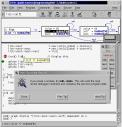
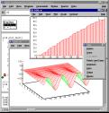
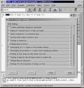
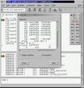
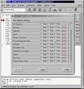

GNU Project -
Software
GNU DDD is a graphical front-end for command-line debuggers such
as GDB, DBX, WDB, Ladebug, JDB,
XDB, the Perl debugger, the bash
debugger bashdb, the GNU Make
debugger remake, or the
Python debugger pydb. Besides
``usual'' front-end features such as viewing source texts, DDD has
become famous through its interactive graphical data display, where
data structures are displayed as graphs.





For more information (and more screenshots), see the
DDD Manual.
- (2009/02/11) DDD 3.3.12 is now available from
ftp.gnu.org.
DDD 3.3.12 features much improved support for debugging
Python, Bash and Make, as well as various bug fixes.
- (2008/11/07) Release candidate 3.3.12-rc1 is available.
DDD can now be used effectively to debug Python, Bash and Makefiles.
You can grab the new release candidate from
alpha.gnu.org. The source tarball
is signed with the maintainer's GPG public key, which you can download from
Savannah.
- (2008/10/22) DDD has a bug tracker on Savannah.
The bug tracker
is the best way to report bugs (use "Bugs" on the toolbar, and "Submit").
You are encouraged to login, but you can post bug anonymously if you want.
Posting directly to the bug-ddd mailing list is now deprecated, since the tracker
is a much more powerful way to organise the information. Please follow the
instructions for bug reporting.
- (2008/10/19) Jose Maria Gomez Vergara has handed
maintainership of DDD to Peter Wainwright.
- Older News.
DDD can be found at
/gnu/ddd/ on
ftp.gnu.org, on
Savannah
or at any GNU FTP
mirror near you.
The ddd/ directory contains the DDD source distribution:
- ddd-version.tar.gz
-- this package is the one you want. It includes
-
- the complete DDD source code,
- building instructions, as well as
- the DDD manual in TeXinfo, Info, PostScript, and PDF formats.
Here are further instructions on how to download and
unpack GNU packages.
You can support the principle of software freedom by buying stuff from the
FSF shop.
The FSF does not distribute DDD binaries. You can ask for help if you
need technical support.
DDD binaries for GNU/Linux are
typically available via your GNU/Linux distributor:
The written word provides
binaries of freely available software for various platforms. Their FTP
server contains DDD and XPM packages.
To build DDD from sources, you need
The simplest way to build and install DDD is:
- Unpack the DDD source distribution
- Change into the ddd-version subdirectory
- Type ./configure && make.
- If the above doesn't give an error, type make install to install the program. (Depending on your OS and permission level you might need to use sudo make install to install instead.)
To run DDD, you need the GNU debugger
(GDB), version 4.16 or later (or depending on the program to be
debugged, possibly other command-line debuggers such
as Ladebug,
JDB, XDB, the Perl debugger,
the bash debugger bashdb, the GNU
Make debugger remake, or the
Python debugger pydb.)
The DDD Manual contains a detailed tutorial.
Here are some free third-party tutorials on the Web:
The DDD Subversion repository (containing all versions of DDD, including the
very latest changes) is available via
http://savannah.gnu.org/projects/ddd.
You can report bugs on the bug tracker.
Before you do this, please check the following:
- Please try to see whether your bug has already been reported. You can
browse or
search
the bug tracker.
- Please read the section ``Bugs and How to Report Them'' toward
the end of the DDD Manual.
- Be sure to include a copy of your ~/.ddd/log file
which tells your DDD configuration as well as the interaction between
DDD and the underlying command-line debugger.
- Remember, the more (relevant) information you put in your bug report,
the more likely it is to be fixed rapidly.
The purpose of reporting a bug is to enable the bug to be fixed for
the sake of the whole community of users. You may or may not receive a
response; the maintainers will send one if that helps them find or
verify a fix. Most GNU maintainers are volunteers and all are
overworked; they don't have time to help individuals and still fix the
bugs and make the improvements that everyone wants. If you want help
for yourself in particular, you may have to hire someone for technical support.
If you are willing to help fixing DDD bugs, you can
subscribe
to the bug-ddd mailing list or access its archives.
We have a general-purpose mailing list devoted to DDD. You can ask
any questions to ddd at gnu.org. Patches and new
releases are also announced here. Subscription info and
mailing list archives are available. Owing to abuse by spammers,
it is necessary to subscribe before posting to the list.
If you need technical support on DDD, you can ask for technical support.
As mentioned above, DDD runs a number of debuggers
under the scenes. One can issue commands directly to those
debuggers. Below are links for these debuggers:
(To do: expand the above for more references on each debugger,
e.g, tutorials, books, video demos.)
Here are some other related resources:
- LessTif or Open Motif.
A window library needed to compile DDD.
- HP Wildebeest (WDB).
A port of GDB to PA-RISC/HP-UX, by HP.
- Insight.
A very nice GUI for GDB from
Redhat, the GDB maintainers.
- KDbg.
A KDE-based GDB Interface with inspection of variable values in a tree structure.
- xxgdb.
The oldest and simplest X interface for GDB and DBX.
- tgdb.
A Tcl/Tk GDB interface (similar to Turbo Debugger or
CodeView).
- deet.
A simple and extensible graphical debugger.
- A list of available Perl debuggers.
The ultimate Perl reference.
- A GUI for the Perl Debugger.
Written in Perl.
- GNU Nana.
Improved support for assertions and logging in C and C++.
- GNU Checker.
A tool to find memory errors at runtime
- xwpe.
A programming environment integrating a program editor with an external debugger.
- Valgrind.
No-one developing C or C++ code under Linux/x86 or Linux/PPC should be without it.
Have fun with DDD!
Current Maintainer:
Peter Wainwright
<peter dot wainwright at ieee dot org>
Former Maintainers:
Andreas Zeller
<zeller at gnu.org>
Andrew Gaylard <apg at users dot sf dot net>
Jose María Gómez Vergara
<josemaria at jmgv dot org>
Return to GNU's home page.
Please send FSF & GNU inquiries & questions to
gnu at gnu.org.
There are also other ways to contact the FSF.
Please send comments on these web pages to
bug-ddd at gnu.org.
Copyright © 2000-2011 Free Software Foundation, Inc.,
51 Franklin Street, Fifth Floor, Boston, MA 02110-1301, USA
Verbatim copying and distribution of this entire article is
permitted in any medium, provided this notice is preserved.
Updated:
$Date: 2011/05/04 23:31:21 $ $Author: karl $


{kind=link}
{kind=link}
{kind=link}
{kind=link}
{kind=link}